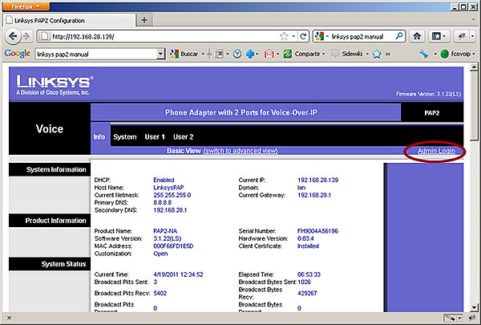
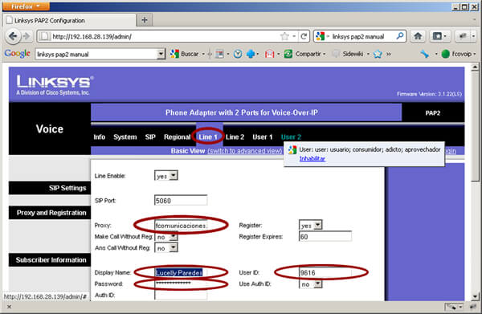
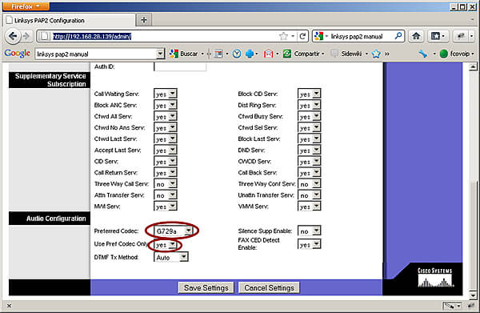
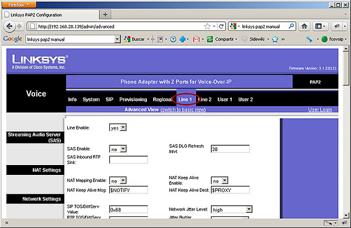

Manual de Configuración Linksys PAP2
1. Identifiqué la dirección IP del ATA e ingresé a través de su navegador preferido.
2. Una vez en la página del dispositivo realizar clic en «admin»

3. Una vez en modo administrador, clic en «Line 1».
En este punto definimos el usuario, contraseña y proxy de conexión.

Proxy and Registration
Proxy | mcsolucionesonline.com
Subscriber Information
User ID | Número de Cuenta / Usuario SIP
Password | Clave asociada a la cuenta SIP
4. Definir el códec g729 en la sección «Audio Configuration».

Audio Configuration
Preferred Codec | G729
Use Pref Codec Only | Yes
5. Definición de plan de marcado (Dial plan). Para facilitar la marcación directa a celulares y fijos(aplica para Colombia únicamente), realizar clic en «(switch to advanced view)»

6. Luego nuevamente clic en «Line 1»

7. Ahora Tendremos acceso a algunas opciones avanzadas del dispositivo, en la parte inferior encontramos «Dialplan»

Dialplan
(<:00578>[2]xxxxxxS0|<07:0057>xxxxxxxxS0|<05:0057>xxxxxxxxS0|<09:0057>xxxxxxxxS0|<3:00573>xxxxxxxxxS0|<009:00>x.|<007:00>x.|<005:00>x.|20xxS0|600S0|xxx.)
Si desea habilitar la línea 2 hacer clic en «línea 2» y repetir los pasos .
Volver